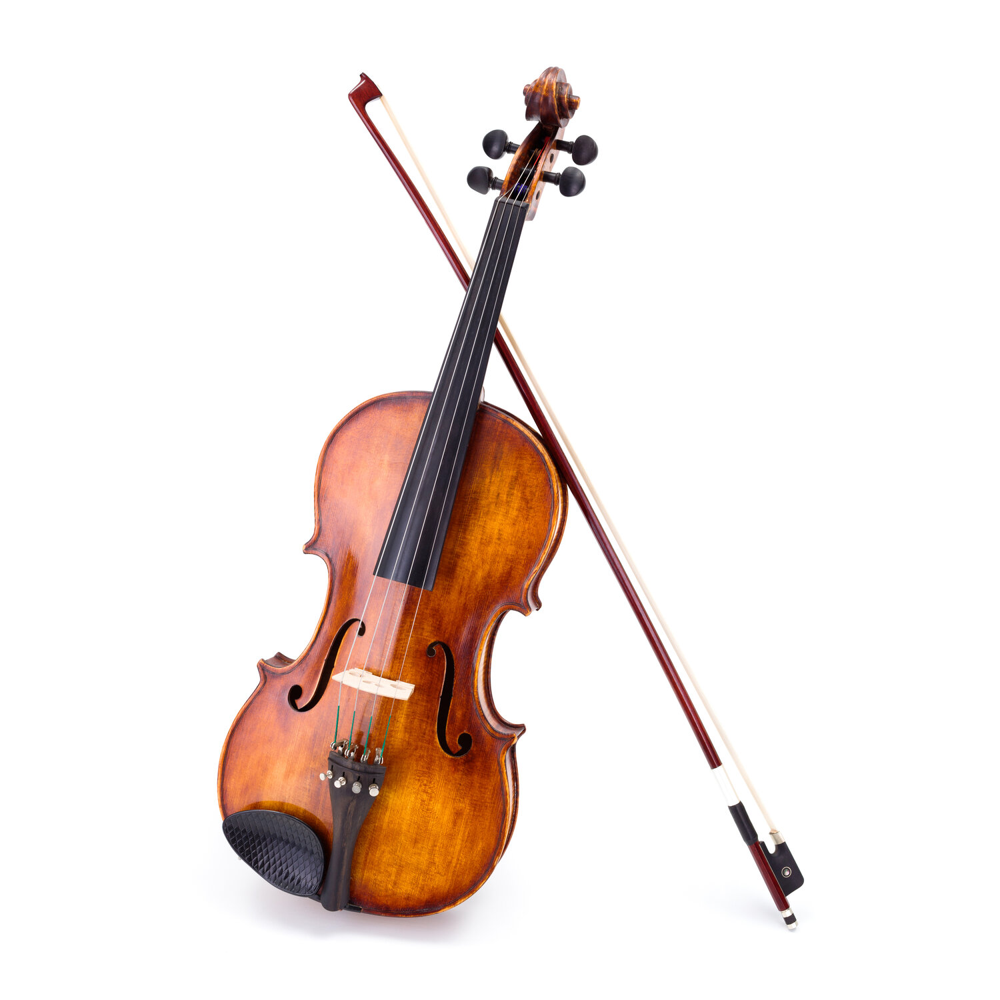

The violin is a wooden string instrument in the violin family. The violin is the smallest and thus highest-pitched instrument (soprano) in the family in regular use.It typically has four strings (some can have five, usually electronic one), usually tuned in perfect fifths with notes G3, D4, A4, E5, and is most commonly played by drawing a bow across its strings. The viollin can also be played by plucking the strings with the fingers (pizzicato) and, in specialized cases, by striking the strings with the wooden side of the bow (col legno).
As a fellow violinist, I would like to raise awarness and show the magic behind this amazing musical instrument. It's my one and only hobby, my one and only passion and the only thing I enjoy working hard for. I hope that after visiting my page you'll fall in love with the violin, just like I did.
 For more information, click here..